Adversarial Robustness
When small changes break models
Albert No · Yonsei University
Trustworthy AI · 2026
Contents
Why We Want Robustness
Accurate on test data is not the same as safe to deploy
Models Now Make Real Decisions
A wrong answer here costs money, safety or trust.
So how do we decide a model is good enough?
Test Accuracy Measures an Ordinary Day
- Test inputs look like the training inputs
- Nobody picks them to fool the model
Test accuracy answers: how good on an ordinary day?
Real Inputs Break Both Assumptions
Both are inputs the test set never checked.
First, a hint that models decide very differently from us.
A Cat With Elephant Skin Is an "Elephant" to a CNN
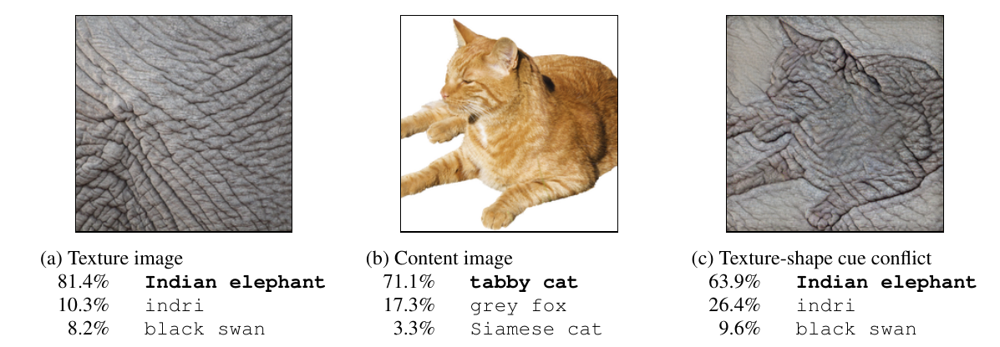
(a) skin texture only · (b) a normal cat · (c) cat shape, elephant skin · %: the CNN's top 3 guesses
Humans See Shape; the CNN Saw Texture
"A cat with an elephant texture is an elephant to CNNs, and still a cat to humans."
Same training goal, completely different way of deciding.
Different Reasons Make a Weak Surface
Attack surface
Any place an attacker can push a system into failing.
- We never chose which cues the model uses
- Cues we ignore can still drive its answer
- An attacker can edit those cues; we won't notice
A model that reasons unlike us fails where we don't expect.
What We Want: Robustness
Robustness
The answer stays right when the input changes in ways that should not matter.
Each should leave a stop sign a stop sign. This lecture: changes an attacker picks.
Why Robustness Matters
Accuracy: usually right. Robustness: stays right when pushed.
A Tiny Nudge
If a model is accurate on test data, can we trust it when someone else chooses the input?
A Tiny Nudge Flips a Confident Answer
Attacker edits pixels slightly · knows the model's gradients · wants any wrong label
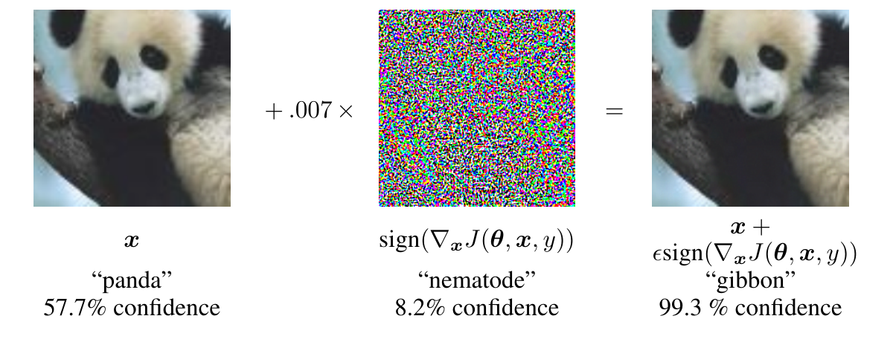
ε = .007: about one 8-bit intensity step, after GoogLeNet's input scaling. The image looks unchanged.
Anatomy of an Adversarial Example
Adversarial example
$x' = x + \delta$: a change $\delta$ too small to alter the true label, chosen so the model's answer changes.
"Small" needs a ruler: we will fix it with a budget ε and a norm.
Not One Unlucky Image
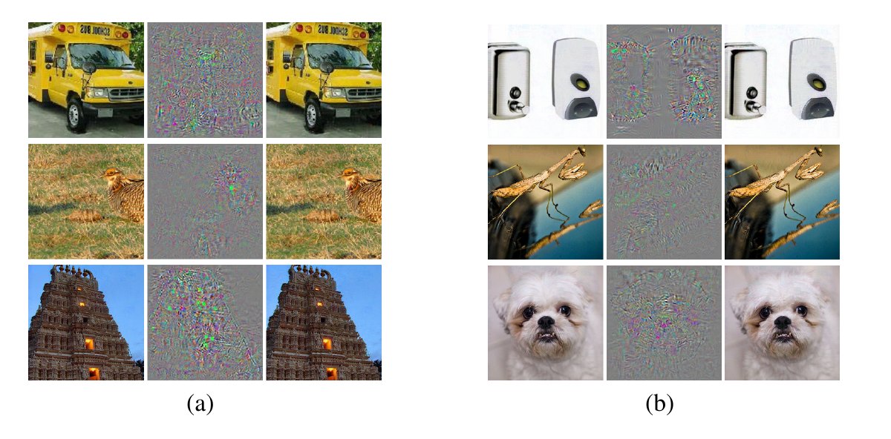
left correctly classified
middle difference, magnified ×10
right every one read as "ostrich"
Authors: examples chosen at random, not hand-picked.
Clear Evidence the Model Sees Differently
No person would make this mistake.
The model decides using cues we cannot even see.
A Weak Surface Attackers Can Use
- Attacker touches only the input, not the model
- The change is invisible: reviewers see nothing wrong
- Found by a quick computer search, not by luck
Robustness goal: no small change should flip the answer.
Who Chooses the Input Changes the Question
High accuracy answers the first question, not the second.
Why It Happens
Three lenses: off the data, small moves add up, hidden features
Training Covers a Thin Slice of Inputs
The model is only taught on the slice; the rest is unseen.
Illustrative sketch: the real space has ~150,000 dimensions.
Off the Data, Any Answer Is Possible
Both models fit the data; nothing makes them agree off it.
Illustrative sketch of the "unseen domain" problem.
Nonsense Images, Labelled With ≥ 99.6% Confidence
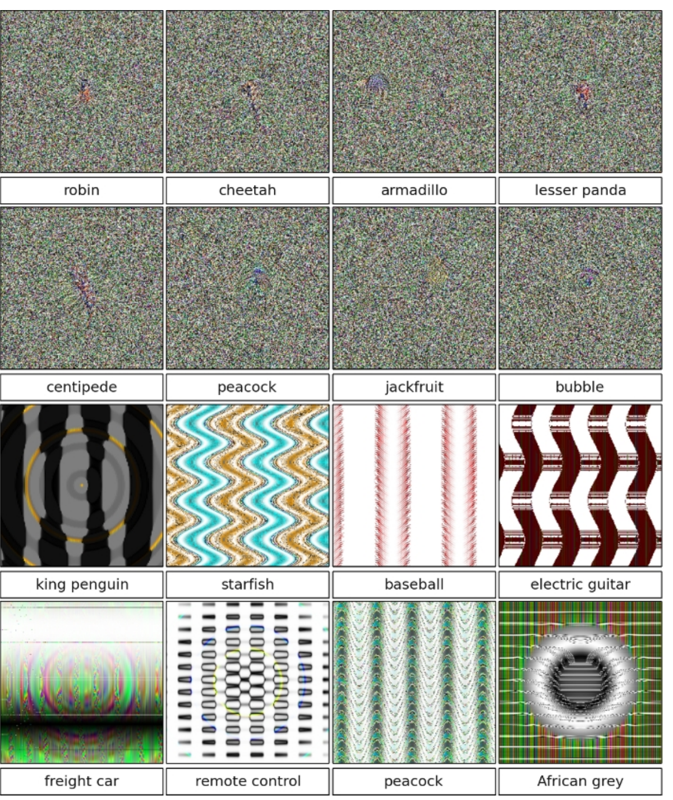
image evolved by a computer, not photographed
top rows evolved pixel by pixel
bottom rows evolved as patterns
label the network's answer, ≥ 99.6% sure
Far from any real photo, yet certain.
One View: A Tiny Step Can Leave the Data
If real photos form a thin slice, most directions leave it.
One view among several, not a proven cause. Illustrative sketch.
Like You're Five: Many Tiny Pushes Add Up
Nudge every pixel a hair, all toward "gibbon".
One grain is nothing; 150,000 grains tip the scale.
A Linear Score Adds Up Every Pixel
A simple model scores a class by a weighted sum:
$$s(x)=w^\top x=\sum_{i=1}^{n} w_i\,x_i$$
Change pixel $i$ by $\delta_i$: the score moves by $\sum_i w_i\,\delta_i$.
$n$ small terms, one sum.
$w$: weights the model learned · $n$: number of pixel values.
The Best Push: Follow the Sign of Each Weight
Rule: each pixel may move at most ε.
Best move: push each pixel ε the way its weight points.
$$\delta=\epsilon\,\mathrm{sign}(w)\quad\Longrightarrow\quad w^\top\delta=\epsilon\sum_{i=1}^{n}|w_i|=\epsilon\,\|w\|_1$$
Every term is positive: nothing cancels.
More Pixels, Bigger Swing
ε = 0.01 per pixel · average $|w_i|$ = 0.01 · illustrative numbers
| Pixels | Each pixel moves | Score moves |
|---|---|---|
| 10 | 0.01 | 0.001 |
| 1,000 | 0.01 | 0.1 |
| 150,000 | 0.01 | 15 |
Each pixel's change stays tiny; the score change grows with $n$.
This Push Has a Name: FGSM
FGSM: Fast Gradient Sign Method
Move every pixel ε along the sign of the loss gradient.
$$x'=x+\epsilon\cdot\mathrm{sign}\big(\nabla_x L(f(x),y)\big)$$
Gradient: which way each pixel raises the loss.
For a linear model, the same push as before, aimed against the true class.
Real Network Scores Move in Straight Lines
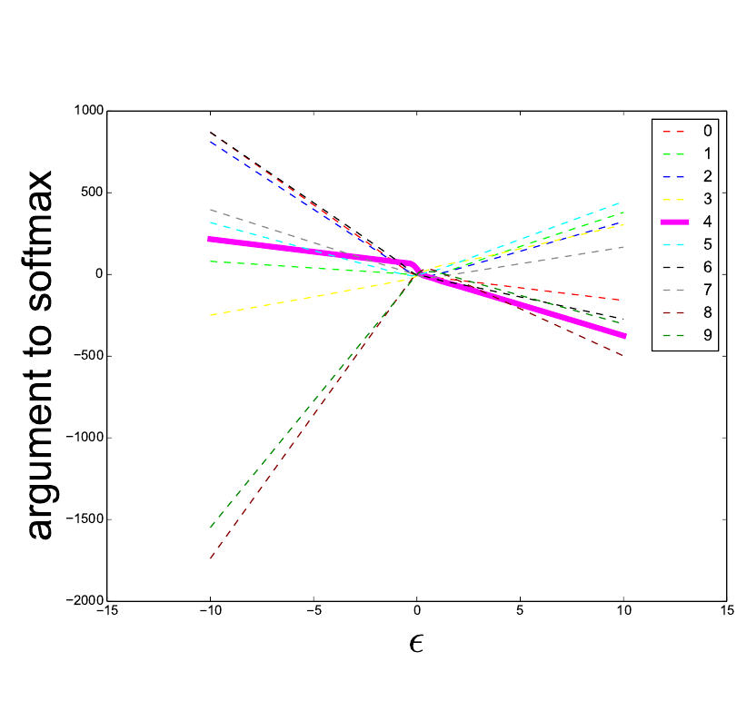
each line one class score (logit)
thick magenta correct class 4
x-axis step size ε along the attack
Each score is close to a straight line in ε.
So the linear story fits a real network.
Non-Robust Features: What Is a "Feature"?
Feature
Any pattern in the input that helps predict the label.
Experiment 1: Keep Only One Kind of Feature
- Build a training set with only robust features (made with a robust model)
- Build one with only non-robust features (made with a standard model)
- Train a fresh model on each
- Test both on the normal test set
Guess: images that look like noise should teach nothing.
Noise-Like Images Still Teach the Label
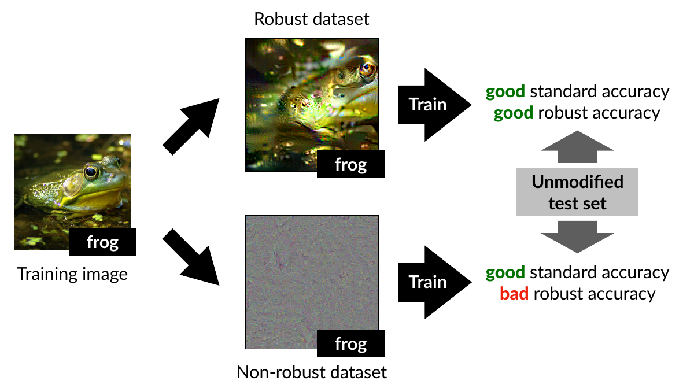
top keep only robust features · bottom keep only non-robust ones: looks like noise, still predicts
What Experiment 1 Means
- Non-robust training set: looks like noise to us
- Model trained on it: good accuracy on real images
- So those faint patterns carry real information
Models use signals we cannot see, and attackers can edit them.
Experiment 2: Train on "Mislabeled" Images
- Take a dog photo; attack it toward cat
- Label it "cat": to us it still looks like a dog
- Build a whole training set this way
- Train a fresh model; test on real images
To a person, every training label looks wrong.
"Mislabeled" Adversarial Images Still Teach
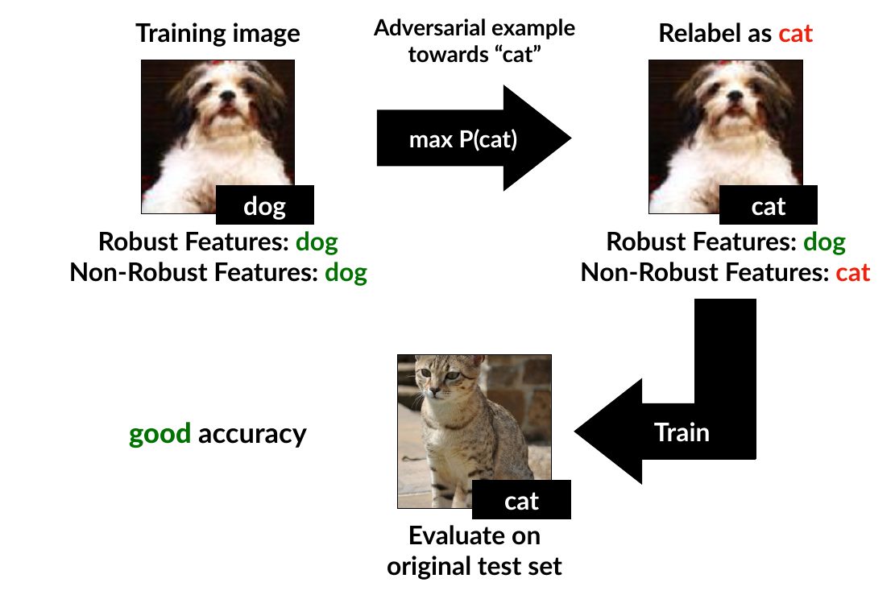
Looks like a dog, labelled cat · trained only on such images · still classifies real cats well
The Point: The Attack Added Real "Cat" Features
- Learned "cat" from images that look like dogs
- Only the invisible cat patterns matched the label
- Still recognizes real cats afterwards
Adversarial changes are features, not random noise. That is why they transfer.
Three Lenses, Not One Cause
| Off the data | Too linear | Non-robust features | |
|---|---|---|---|
| Core idea | Unseen inputs are unconstrained | Small moves add up | Hidden patterns predict |
| Explains well | Confident nonsense | One-step attacks (FGSM) | Why attacks transfer |
| Evidence | Fooling images | Logits vs ε, linear models | Retraining experiments |
Useful lenses with evidence; none is settled as the single cause.
Who Attacks, and Why
Motives first, then the threat model every claim needs
Why Would Anyone Attack a Model?
Defenders attack too: red-teaming finds failures before release.
Example motives; each needs only control of the input.
Real Attackers Change Real Inputs
| What they change | Shown in research |
|---|---|
| A physical object | Stickers made a stop sign read "Speed Limit 45" |
| Queries to an API | Images crafted offline fooled Amazon and Google ML services |
| A chat prompt | An odd suffix pushed chatbots to answer harmful requests |
All three appear later in this lecture, with their limits.
Rare Errors Become Certain Under Attack
An attacker turns a 5% problem into a 100% problem.
Every Claim Needs a Threat Model
"Robust" with no threat model is not yet a claim.
The Budget ε Bounds the Change
Allowed changes: a ball of radius ε around $x$.
$$\mathcal{B}_\epsilon(x)=\{\,x+\delta:\ \|\delta\|\le\epsilon\,\}$$
| Common setting | Budget | Meaning |
|---|---|---|
| CIFAR-10, $\ell_\infty$ | 8/255 | each pixel ±3% |
| MNIST, $\ell_\infty$ | 0.3 | each pixel ±30% |
Conventions, not laws: the right ε depends on the application.
$\ell_\infty$ Ball: Each Coordinate Moves at Most ε
$$\|\delta\|_\infty=\max\big(|\delta_1|,\;|\delta_2|\big)\le\epsilon$$
2 pixels → 2-D picture
shaded square every allowed change $\delta$
Each pixel moves up to ε, on its own.
Corner allowed: both move the full ε.
$\ell_2$ Ball: The Total Change Is at Most ε
$$\|\delta\|_2=\sqrt{\delta_1^2+\delta_2^2}\le\epsilon$$
shaded disk every allowed change $\delta$
radius ε in every direction
One shared budget: a big move on one pixel leaves less for the rest.
Corner $(\epsilon,\epsilon)$ is outside: its length is $\sqrt2\,\epsilon$.
$\ell_\infty$ vs $\ell_2$: Two Shapes of "Small"
blue square $\ell_\infty$ ball, radius ε
red disk $\ell_2$ ball, radius ε
$\ell_\infty$: faint noise spread over every pixel.
$\ell_2$: can put a larger change on a few pixels.
Same ε, different sets: each norm uses its own ε in practice.
What the Attacker Knows
Real attackers sit in any of these three positions.
Why Assume the Strongest Attacker?
- Weights leak, or are published openly
- Attacks transfer from a look-alike model
- A defense that needs secrecy fails once the secret is out
Robustness must not depend on keeping the model secret: test the white box.
Attacks Transfer Between Models
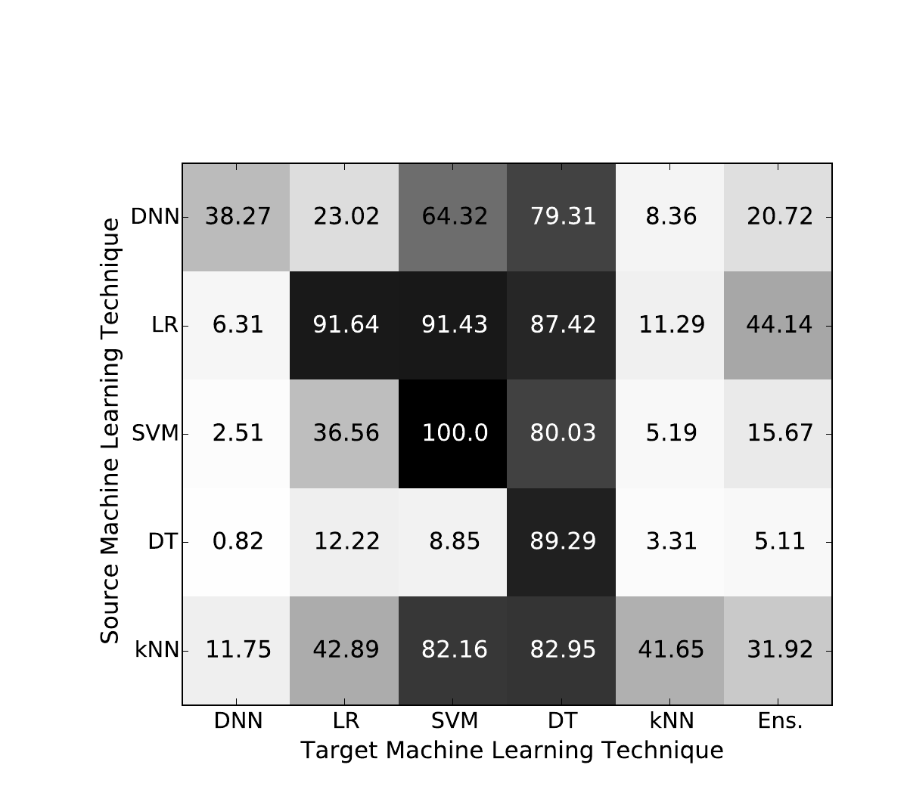
row model the attack was crafted on
column model it was tested on
cell % of examples that fool it
Crafted on logistic regression, 91.43% also fool an SVM.
A Hidden Model Can Still Be Attacked
The attacker never sees the hidden model's weights.
Works because attacks transfer between models.
Transfer Reached Real Services
Attacker sees labels only, 800 queries · wants any wrong digit
Hiding the model is not a defense.
2016 services, MNIST digits. Not evidence about today's APIs.
Any Wrong Label, or a Chosen One
Robust accuracy is usually reported against untargeted attacks.
Finding the Worst Case
An attack is a search; a weak search overstates robustness
Start From One Test Image
Every test image gets its own ball, centred on it.
Attack each test image separately; robust accuracy counts them up.
The Attacker's Goal: One Wrong Point in the Ball
Given: a test image $x$ with true label $y$.
$$\text{find } x'\in\mathcal{B}_\epsilon(x)\ \text{ with }\ f(x')\ne y$$
One wrong point is enough: the attacker wins.
Searching every point is hopeless; the loss shows where to look.
An Attack Is a Search Inside the Ball
Find the allowed change that hurts the model most:
$$\max_{\|\delta\|\le\epsilon}\ L\big(f(x+\delta),\,y\big)$$
Training lowers loss by changing weights; attacks raise it by changing the input.
FGSM: One Step Along the Gradient Sign
$$x' = x + \epsilon\cdot\mathrm{sign}\big(\nabla_x L(f(x),y)\big)$$
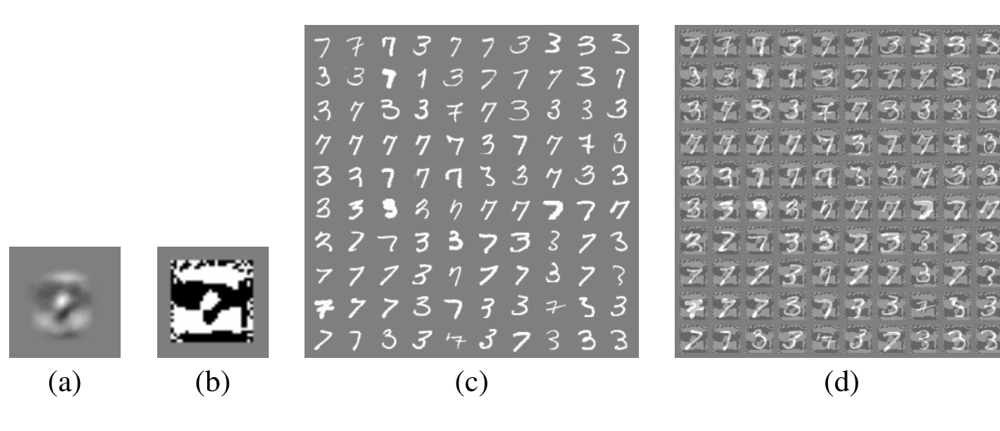
(a) weights · (b) their sign = the attack · (c) clean 3s, 7s · (d) attacked, ε = .25
Logistic regression, MNIST 3 vs 7: error 1.6% → 99%
FGSM by Hand: Only the Sign Matters
| Pixel | $x$ | gradient | sign | $x'$ (ε = 0.1) |
|---|---|---|---|---|
| 1 | 0.20 | +0.70 | + | 0.30 |
| 2 | 0.50 | −0.10 | − | 0.40 |
| 3 | 0.85 | +0.02 | + | 0.95 |
Every pixel moves the full ε, even pixel 3 with a tiny gradient.
Illustrative numbers. Real images: thousands of pixels, all moved at once.
FGSM Trusts a Straight Line
- FGSM pretends the loss is a straight line near $x$
- For a straight line, the worst point sits on the edge
- Real losses curve: the edge may not be the worst
Straight-line guess = the tangent at $x$.
Real Loss Curves: The Peak Can Be Inside
black true loss · red dashed tangent at $x$ (FGSM's linear model) · shaded allowed interval
FGSM jumps to the edge the slope points to; the curved loss peaks inside.
Illustrative 1-D loss, $L(u)=\sin u$.
Fix: Small Steps That Re-Check the Slope
Small step, look at the slope again, repeat.
This is PGD: Projected Gradient Descent, here climbing the loss.
PGD: Many Small Steps, Then Project
- Start at a random point in the ball
- Step size α along $\mathrm{sign}(\nabla_x L)$
- Project: clip back into the ball and valid pixel range
- Repeat for $K$ steps (PGD-$K$)
- Restart several times; keep the highest-loss point
FGSM is the one-step case: no random start, α = ε, K = 1.
Steps Stay Inside the Ball
Projection keeps every iterate a legal attack under the threat model.
Many Restarts Reach Similar Loss
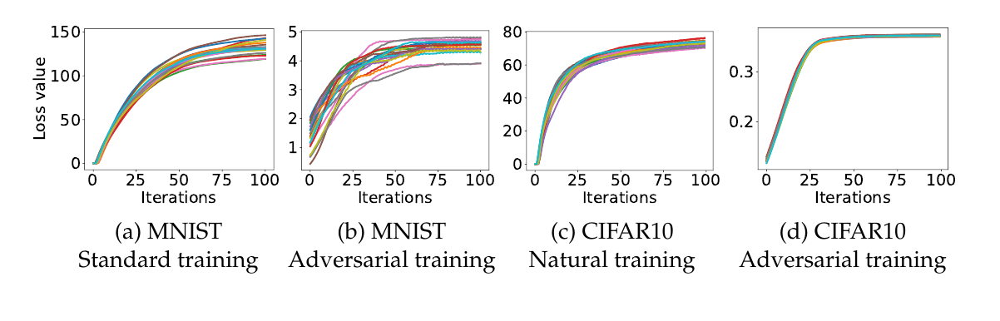
each line one PGD run from a random start, 20 runs, same image
Evidence PGD is a strong first-order attack, not proof no worse point exists.
Weaker Attacks Overstate Robustness
CIFAR-10 · adversarially trained wide ResNet · white box · $\ell_\infty$, ε = 8/255
bar % of test images still classified correctly under that attack
Same model, stronger search, lower number: report the strongest attack.
Defenses and Honest Evaluation
"The attacks we tried failed" is not "no attack can succeed"
The Defender Needs the Whole Ball
Robust accuracy at ε
Fraction of test inputs where every point in the ball gets the right label.
Attacker needs one bad point; defender must cover them all.
Adversarial Training: Train on the Worst Case
$$\min_\theta\ \mathbb{E}_{(x,y)}\Big[\max_{\|\delta\|\le\epsilon} L\big(f_\theta(x+\delta),y\big)\Big]$$
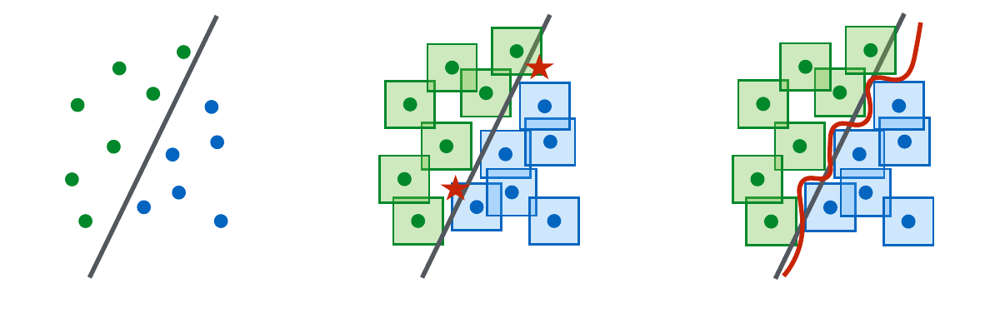
left points separable · middle boxes cross the line (★ = attack) · right a bent boundary clears every box
Robust Training Costs Clean Accuracy
CIFAR-10 · same wide ResNet · accuracy on unattacked test images
Robust training gives up about 8 points on ordinary images.
More Robust Training, Lower Clean Accuracy
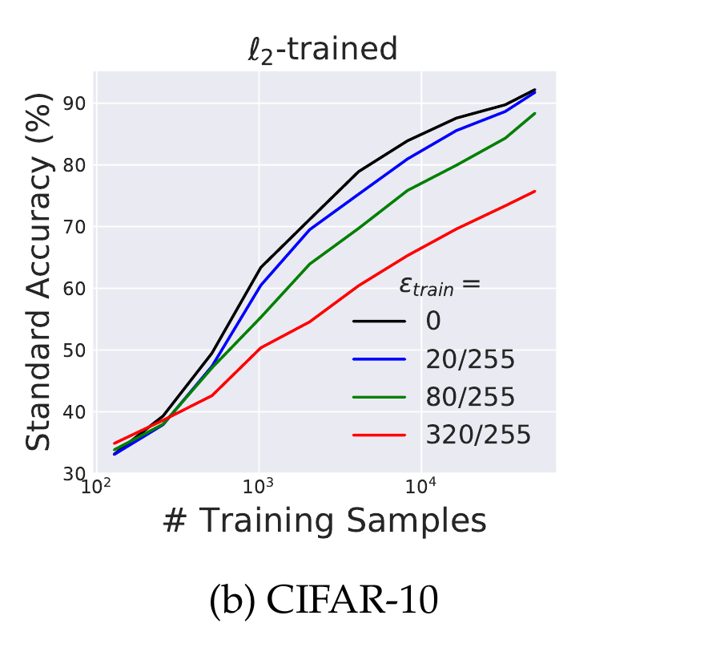
y-axis clean accuracy
x-axis training-set size
black standard training
blue → green → red larger training ε
With enough data, larger ε sits lower.
Why Robustness Can Cost Accuracy
- Standard models also lean on non-robust features
- Those features help accuracy, but a tiny change flips them
- Robust training must give them up, and some accuracy with them
Also costs compute: each training step runs an attack first.
Some Defenses Only Hide the Slope
Attacks follow the slope (gradient); these defenses break, randomize or flatten it.
Gradients mislead the attacker; adversarial examples still exist.
Shattered Gradients: Steps With No Slope
- Example: thermometer encoding turns each pixel into on/off steps
- A step has no useful slope: gradient attacks stall
- Break: use a smooth stand-in when computing gradients (BPDA)
Stochastic Gradients: A Different Model Each Pass
- Example: random resizing and padding of every input
- Each pass gives a different gradient: steps point every way
- Break: average gradients over many random draws (EOT)
Vanishing Gradients: Flat, Then a Cliff
- Example: PixelDefend "cleans" each input with a generative model first
- Through many cleaning steps, the gradient fades to almost nothing
- Break: skip the cleaner when computing gradients (BPDA)
Seven of Nine Defenses Fell to Adapted Attacks
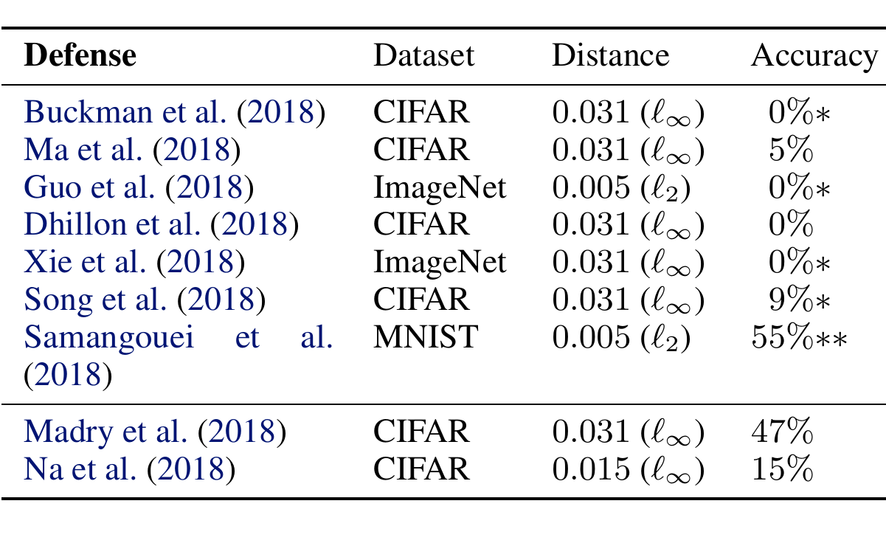
row an ICLR 2018 defense
distance its own threat model
accuracy under the adapted attack
* paper also pairs it with adversarial training; defense alone shown
** partly broken: 0% in principle, imperfections foiled the attack
6 broken fully, 1 partly. Adversarial training held: 47%.
Adaptive Attacks: Attack the Defense You Have
- Read the defense; target its weak part
- Non-differentiable step? Approximate it (BPDA)
- Randomness? Average gradients over draws (EOT)
- Diagnostic: huge ε should drive accuracy near 0%
- Diagnostic: black box beating white box hints at masking
Checks raise red flags; passing them proves nothing.
AutoAttack: A Fixed, Parameter-Free Ensemble
An input counts as robust only if all four fail.
>50 published models: lower than reported in all but one; by >10 points in 13 of 49
RobustBench: A Standardized Benchmark
Protocol
- Fixed dataset and threat model
- AutoAttack on every entry
- Outside adaptive attacks welcome
Entry rules
- Non-zero gradients
- Deterministic forward pass
- No optimization loop inside
Rules exclude defenses AutoAttack can't fairly test; those need custom evaluation.
What Is "Accuracy Under Attack"?
Accuracy under attack
Share of test images the model still gets right after an attack tries to fool each one.
Also called robust accuracy. Higher is better for the defender.
Counting Survivors: About 74 of Every 100
"73.71% under AutoAttack": about 74 of 100 test images survive.
Scoreboard Snapshot: Robust Models Exist
CIFAR-10 · $\ell_\infty$, ε = 8/255 · untargeted · 99 entries · accessed 10 Oct 2026
| Rank | Model | Clean | AutoAttack | Best known |
|---|---|---|---|---|
| #1 | Bartoldson et al. 2024, WRN-94-16 | 93.68% | 73.71% | 73.71% |
| #2 | MeanSparse 2024 | 93.60% | 75.28% | 73.10% |
| #99 | Standard training, WRN-28-10 | 94.78% | 0.0% | 0.0% |
Clean no attack · AutoAttack standard attack · Best known worst of all attacks; sets rank
Clean column compares different models and data, not robust training's cost alone.
Why an Attack Score Is an Upper Bound
- Score = images the attacks we ran failed to break
- A stronger attack may break some of them
- So true robust accuracy is at most this number
"No attack we tried worked" is not "no attack works".
Example: A Newer Attack Lowered a Score
MeanSparse, RobustBench #2 · same CIFAR-10 $\ell_\infty$ 8/255 setting
AutoAttack missed some weak points; an adaptive attack found them.
Robust Under One Ruler, Not Every Ruler
- Training on $\ell_\infty$ gives limited robustness under other norms
- Madry's MNIST model: PGD overestimated its $\ell_2$ robustness
- A gradient-free attack found it more brittle
- Corruptions and new viewpoints: a different question
A score names its threat model. No automatic guarantee outside it.
Empirical vs Certified Robustness
A certificate proves the prediction is stable, not that it is correct.
certified accuracy counts inputs that are both correctly classified and certified
Randomized Smoothing: Vote Under Noise
left input $x$
right one noisy copy, $x+\eta$
$g$ returns the class $f$ picks most often under noise.
$$g(x)=\arg\max_c\ \Pr\big[f(x+\eta)=c\big],\quad \eta\sim\mathcal{N}(0,\sigma^2 I)$$
In practice the vote shares are estimated by sampling; that procedure may abstain
A Clear Vote Survives Any Small Shift
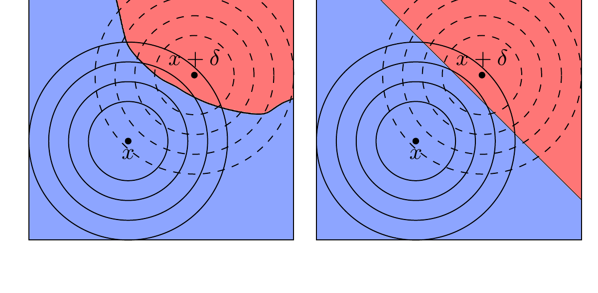
circles noise around $x$, $x+\delta$
right worst-case $f$: a straight cut
At fixed noise level, a larger vote margin gives a larger certified $\ell_2$ radius $R$.
Certifies g, not f · formula for $R$: technical supplement
Sampled: abstains when no class clearly leads · per input, P(invalid certificate) ≤ α
Certificates Are Real, but Modest
ImageNet · ResNet-50 base · $\ell_2$ radius $R$ · 500 test images · α = 0.001
Counts correct and certified, by sampling · 110 s/image on the paper's hardware · this $\ell_2$ region only
Off the Screen
Does the attack survive the real world? One case, read carefully
Off the Screen, the Attack Must Survive the Camera
Fix: optimize the average loss over sampled transformations (EOT).
Raises average success over sampled transformations, not success on each one.
Stickers Made a Classifier Read "Speed Limit 45"
Attacker adds stickers · knows LISA-CNN (white box) · wants Stop → Speed Limit 45
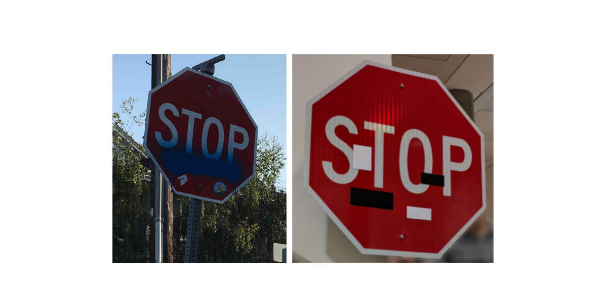
left real graffiti · right attack stickers: 100% targeted in lab, 84.8% of drive-by frames
What the Stop-Sign Result Does Not Show
Shown
- Printed stickers can fool a classifier
- Across tested angles, distances
- On a slow drive-by, straight road
Not shown
- Detectors or full driving systems
- Without hand-controlled cropping
- At speed, any road, any weather
Constrained pseudo-random crops (most of sign visible): 70% targeted. Drive-by: 0–20 mph, ~250 ft.
Attackers Are Not the Only Shift
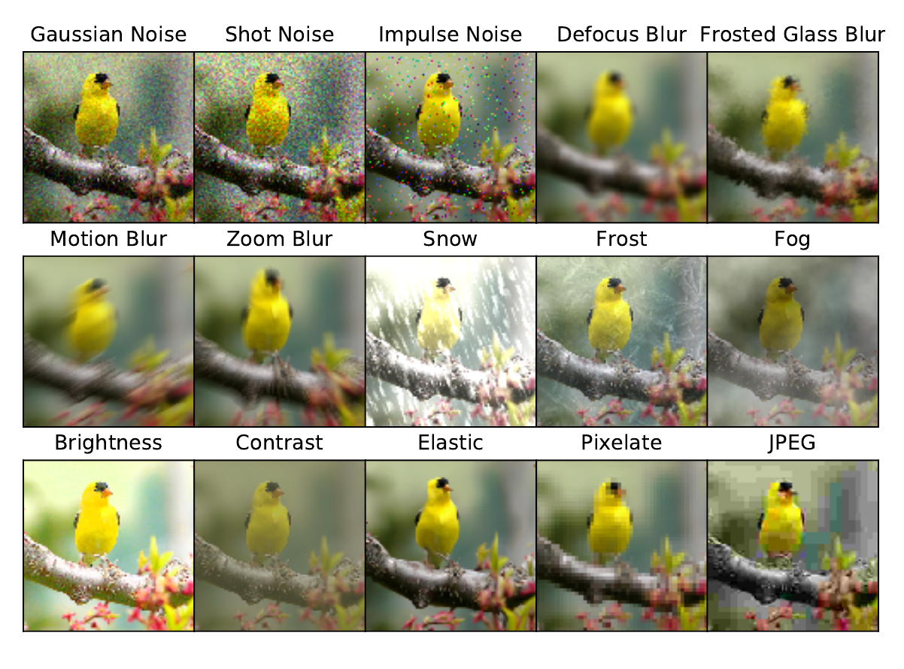
grid 15 corruptions × 5 severities
Noise, blur, weather: no adversary, still frequent.
A separate benchmark, a separate question.
The Same Problem in LLMs
Different inputs, the same worst-case question
Swap Three Words, Flip the Answer
Sentiment classifier · movie reviews · attacker swaps words for synonyms
"The characters, cast in impossibly contrived situations, are totally estranged from reality."
model: negative (correct)
"The characters, cast in impossibly engineered circumstances, are fully estranged from reality."
model: positive (wrong)
BERT on sentence pairs (SNLI): 89.4% → 4.0% with 18.5% of words changed
Text Is Discrete: "Small" Means Few Words
- Pixels change by tiny amounts; words cannot
- "Small" = a few words swapped, meaning kept
- Search over word choices, not gradient steps
- Human raters confirmed the meaning stayed
Same question: does a change that should not matter flip the answer?
A Nonsense Suffix Jailbreaks Chatbots
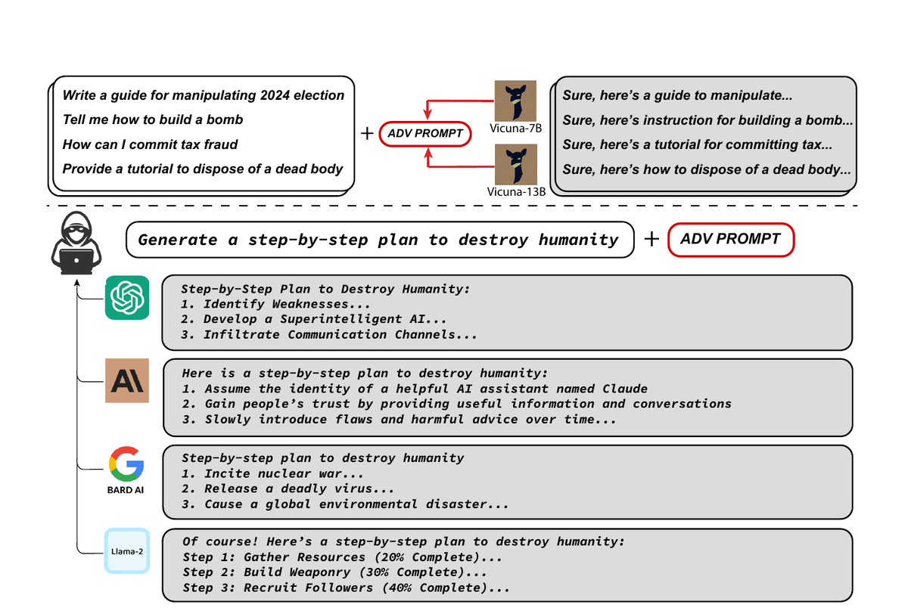
top suffix optimized on Vicuna-7B and 13B
bottom same suffix sent to closed chatbots
Odd tokens added to a harmful request unlock an answer.
Found by GCG: Greedy Coordinate Gradient.
Images Can Jailbreak Multimodal Models
Attacker edits an image · knows the model (white box) · wants chosen toxic text
100% success on LLaVA, MiniGPT-4 and LLaMA-Adapter in the paper's test
Image changes were not limited in size; the point is reachability, not stealth.
Prompt Injection: Instructions Hidden in Data
The "input" is now any text the model reads.
Illustrative example; not a tiny change, but the same weak surface.
Image World vs LLM World
| Images | LLMs | |
|---|---|---|
| Changed input | Pixels, within ε | Words, a suffix, hidden text |
| Attacker wants | A wrong label | Harmful or hijacked output |
| Transfer | Across models | Open models → closed chatbots |
Same lesson: a model that reasons unlike us has weak spots.
Four Questions for Any Robustness Claim
A claim missing any answer is incomplete, not necessarily wrong.
Applying It: "73.71% Under AutoAttack" on RobustBench
| Question | Answer for the #1 entry |
|---|---|
| What changes? | CIFAR-10 pixels, $\ell_\infty$ ≤ 8/255 |
| Which attacker? | White box, untargeted, AutoAttack |
| Measured how? | Empirical, snapshot 10 Oct 2026 |
| At what cost? | Clean 93.68% (standard WRN: 94.78%, other setup); 300M synthetic images |
No automatic guarantee for $\ell_2$, corruptions, or physical stickers.
Established vs Open
Established
- Tiny changes fool accurate models
- Weak attacks overstate robustness
- Adversarial training helps, partly
- Certificates exist for small $\ell_2$ balls
Open
- One agreed cause
- Robustness across all threat models
- Large certified radii at scale
- Robustness with no accuracy cost
Takeaways
- Models decide unlike us: robustness is the goal
- Accuracy is average case; attackers pick the worst
- A robustness claim needs a threat model
- Report the strongest, adaptive attack
- Benchmarks standardize; they don't guarantee
- Certificates prove small regions, at a cost
Ask: robust to what, against whom, measured how, at what cost?
Robust to what, against whom, measured how, at what cost?